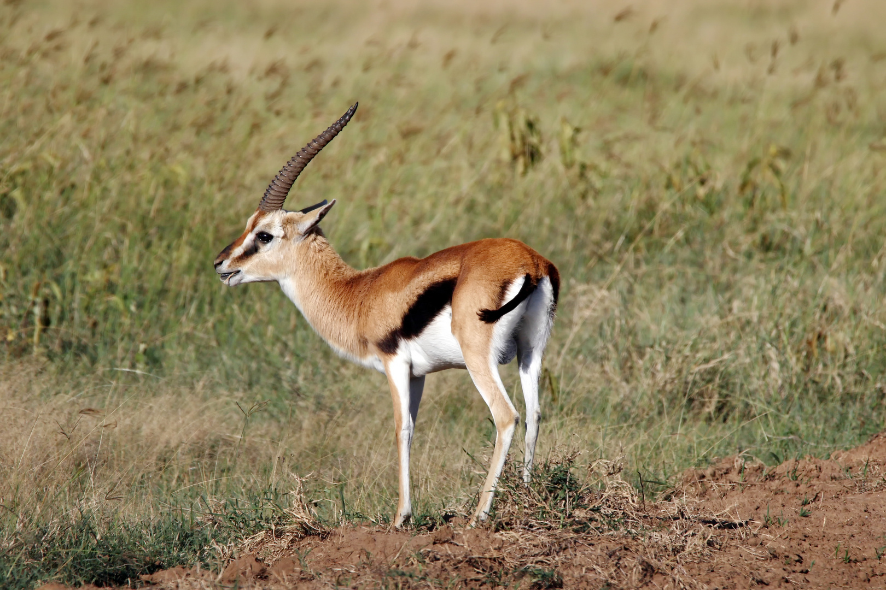
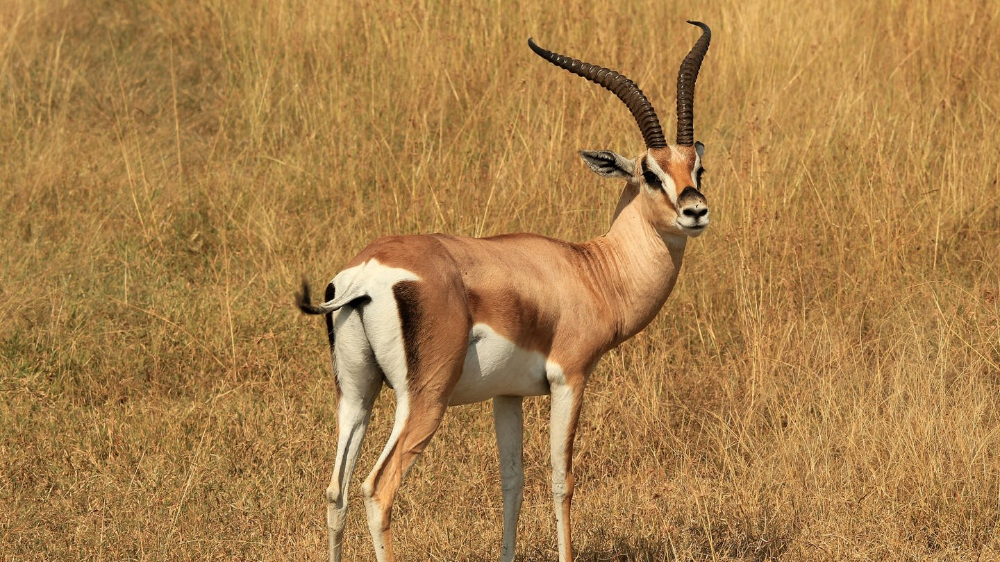
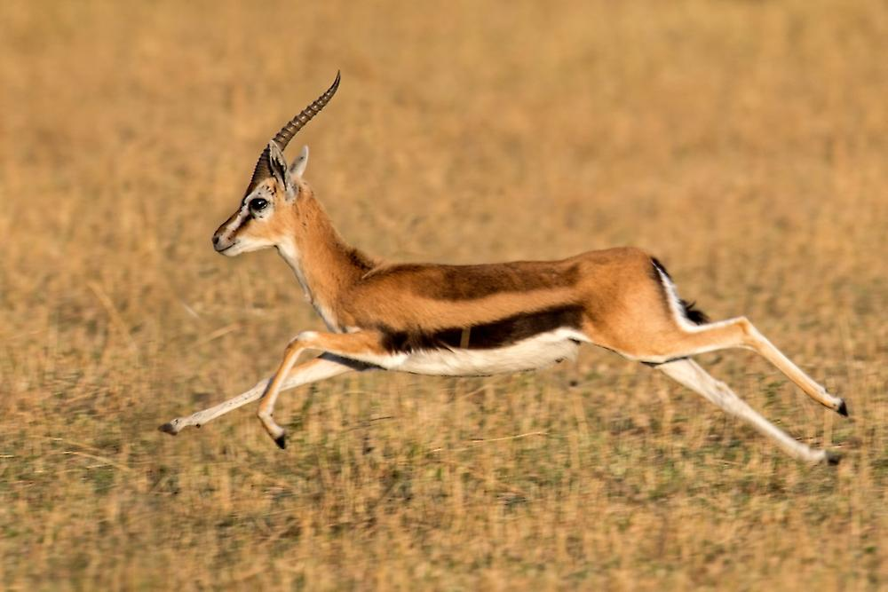

Gazelle
| Verbreitung | Afrika, Arabien, Innerasien |
| Lebensraum | offene Landschaften |
| Maße | Kopf-Rumpflänge: 90–150 cm Schulterhöhe: 55–120 cm Gewicht: 20–80 kg |
| Lebensweise | in Herden |
| Nahrung | Gräser, Kräuter, Blätter, Blüten, Sukkulenten |
| Tragzeit | 5–6 Monate |
| Zahl der Jungen pro Geburt | 1–2, nur bei der Kropfgazelle |
| Höchstalter | bis 14 Jahre |
| Gefährdung | einige Arten gefährdet |
Ernährung
Thomsongazellen ernähren sich fast ausschließlich von Gräsern.
Während der Regenzeit unternehmen sie Wanderungen von mehreren hundert Kilometern,
um die Grasgründe mit dem frischen Gras zu erreichen.
Gelegentlich fressen sie auch junge Triebe und Blätter.
Auf Nahrungssuche gehen sie nur am Tage.
Verhalten
Gazellen sind nach den Geparden die zweitschnellsten Tiere in der Savanne.
Thomson-Gazellen beispielsweise können ein Tempo von
60 Kilometern pro Stunde bis zu vier Minuten lang durchhalten,
ihre Spitzengeschwindigkeiten liegen sogar bei 80 bis 100 Kilometern pro Stunde.
Wenn sie auf der Flucht sind und sehr schnell rennen,
springen Gazellen oft mit allen vier Beinen hoch in die Luft.
Bei diesen Sprüngen können sie das Gelände besser überschauen und sehen,
wo sich die Feinde aufhalten. Außerdem können Gazellen sehr gut sehen,
hören und riechen, sodass ihnen Raubtiere kaum entgehen.
Gazellen sind nur am Tag in den Morgenstunden und am späten Nachmittag aktiv.
Manche Arten leben in Herden von zehn bis 30 Tieren.
In den afrikanischen Savannen, wo die Lebensbedingungen gut sind,
gibt es aber auch Gazellenherden mit mehreren Hundert
oder sogar mehreren Tausend Tieren.
Bei den Thomson-Gazellen leben die jungen Männchen in so genannten Junggesellenherden zusammen.
Wenn sie geschlechtsreif werden, verlassen sie diese Herden und beanspruchen ein eigenes Revier.
Weibchen, die in dieses Revier kommen,
gehören dann zu diesem Männchen und werden gegenüber Konkurrenten verteidigt.
Die Weibchen verlassen aber immer wieder ihre Herde und schließen sich dann einer anderen Herde an.
Gazellen sind nach den Geparden die zweitschnellsten Tiere in der Savanne.
Thomson-Gazellen beispielsweise können ein Tempo von
60 Kilometern pro Stunde bis zu vier Minuten lang durchhalten,
ihre Spitzengeschwindigkeiten liegen sogar bei 80 bis 100 Kilometern pro Stunde.
Wenn sie auf der Flucht sind und sehr schnell rennen,
springen Gazellen oft mit allen vier Beinen hoch in die Luft.
Bei diesen Sprüngen können sie das Gelände besser überschauen und sehen,
wo sich die Feinde aufhalten. Außerdem können Gazellen sehr gut sehen,
hören und riechen, sodass ihnen Raubtiere kaum entgehen.
Gazellen sind nur am Tag in den Morgenstunden und am späten Nachmittag aktiv.
Manche Arten leben in Herden von zehn bis 30 Tieren.
In den afrikanischen Savannen, wo die Lebensbedingungen gut sind,
gibt es aber auch Gazellenherden mit mehreren Hundert
oder sogar mehreren Tausend Tieren.
Bei den Thomson-Gazellen leben die jungen Männchen in so genannten Junggesellenherden zusammen.
Wenn sie geschlechtsreif werden, verlassen sie diese Herden und beanspruchen ein eigenes Revier.
Weibchen, die in dieses Revier kommen,
gehören dann zu diesem Männchen und werden gegenüber Konkurrenten verteidigt.
Die Weibchen verlassen aber immer wieder ihre Herde und schließen sich dann einer anderen Herde an.
Körperbau
Die Gattung der Thomson-Gazellen erreicht – je nach Art - eine Kopf-Rumpflänge von 90 bis 105 cm,
mit einer Schulterhöhe von 55 bis 75 cm.
Ihr Gewicht variiert von etwa 15 bis zu 25 kg.
Ihr Schwanz erreicht eine Länge von etwa 20 bis 25 cm.
Wobei die Östliche Thomson-Gazelle deutlich größer ist als die Westliche.
Beide Arten Beide Arten besitzen eine gelb-braune Oberseite und eine weißliche Unterseite,
die durch einen breiten, schwarzen Streifen an den Seiten voneinander gegrenzt wird.
Das Gesicht wird von einem dunklen Streifen markiert der
von den Augen über die Wangen läuft und nach
innen von einem weißlichen Streifen begrenzt wird.
Die Stirn und das mittlere Gesicht sind dunkel,
wie auch der Schwanz. Die Männchen tragen zwei rund 35 cm lange,
eng beieinander stehende geringelte Hörner,
die der Weibchen sind dagegen kürzer.



Die Gattung der Thomson-Gazellen erreicht – je nach Art - eine Kopf-Rumpflänge von 90 bis 105 cm,
mit einer Schulterhöhe von 55 bis 75 cm.
Ihr Gewicht variiert von etwa 15 bis zu 25 kg.
Ihr Schwanz erreicht eine Länge von etwa 20 bis 25 cm.
Wobei die Östliche Thomson-Gazelle deutlich größer ist als die Westliche.
Beide Arten Beide Arten besitzen eine gelb-braune Oberseite und eine weißliche Unterseite,
die durch einen breiten, schwarzen Streifen an den Seiten voneinander gegrenzt wird.
Das Gesicht wird von einem dunklen Streifen markiert der
von den Augen über die Wangen läuft und nach
innen von einem weißlichen Streifen begrenzt wird.
Die Stirn und das mittlere Gesicht sind dunkel,
wie auch der Schwanz. Die Männchen tragen zwei rund 35 cm lange,
eng beieinander stehende geringelte Hörner,
die der Weibchen sind dagegen kürzer.